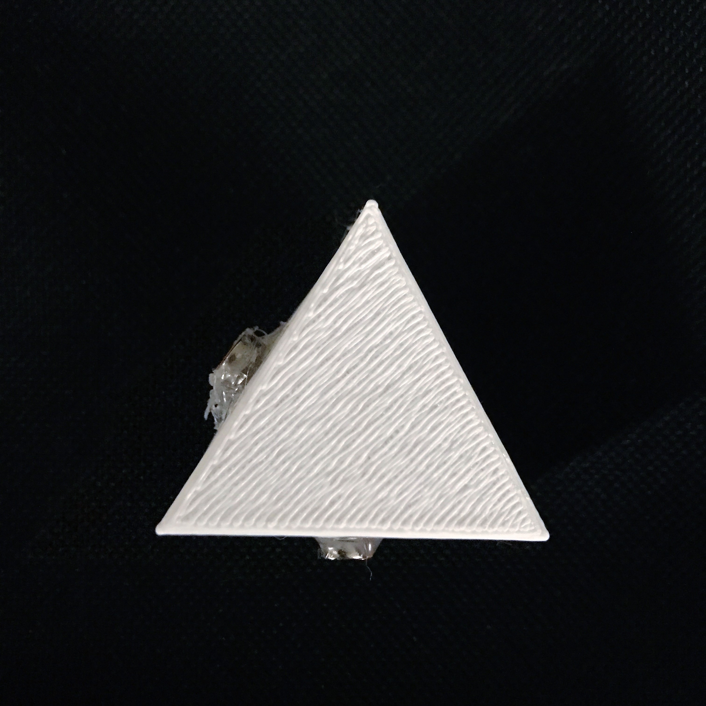
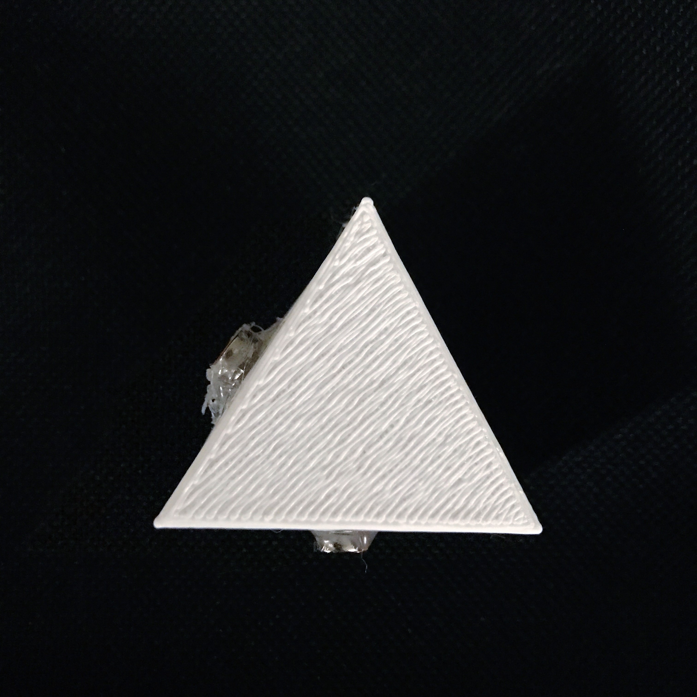

Modular Lighting Blocks Kit: Interactive, small, versatile, portable, easy connection.



Modular Lighting Blocks Kit: Interactive, small, versatile, portable, easy connection.

"I would like to be able to connect on all sides."
Almost all the users wanted the blocks to be more versatile and have magnets on all sides. Therefore, I modified the model to have magnets on all sides.
"I like how it lights up one by one.
"It doesn't have to be for kids and about circuits only. It is an artwork!"
"I wouldn't want my kids to have too much access to batteries, so I would choose the parallel."
Surprisingly, a lot of people liked the parallel ones better than the serial one, in terms of the constant brightness, ease for set-up, and safety. So I think I will move forward with the parallel settings.
Making parallel blocks meaning I will need 2 kinds of blocks that have alternating magnet-power relationships.
"I like the rotating motion!"
Parallel circuit connections require each connnection to provide both power and ground. In order to provide more degree of freedom for parallel circuit, the connection has to be circular.
"Packaging is an interesting process towards this product."